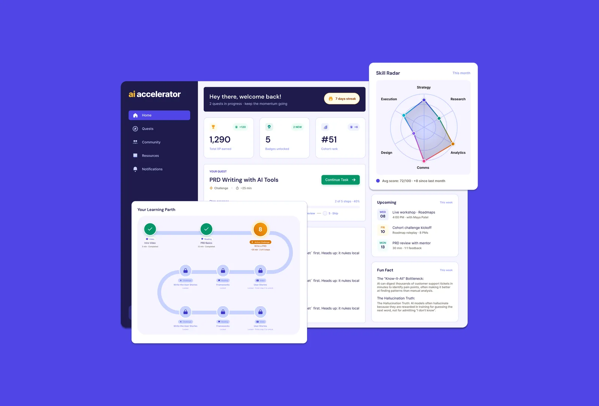

01
Secondary research
Industry adoption reports, AI training literature, and a stakeholder session with the CGI consultant who'd developed the foundational behavioral framework.
Desk + sponsor
I led a 5-person cross-functional team as a part of my capstone project at Northwestern University sponsored by CGI to design an AI adoption platform that turns AI learning from a mandated training into a workflow habit. End-to-end ownership across research, product strategy, design, and business model. Drove 70%+ sustained user adoption in pilot, shipped to development the week after final delivery.
Due to NDAs with CGI, some specific product details, exact metrics, and internal process names have been generalized or omitted.
Context
Despite widespread investment in AI tools across enterprises, adoption stays low. The signals show up everywhere once you look:
The core gap isn't access to AI tools. It's sustained, effective adoption. Most existing solutions treated this as a training problem. We saw it as a behavioral one.
Research
We started where the assumptions lived: industry articles, adoption-trend reports, and a stakeholder session with the CGI consultant developing the underlying framework. That grounded our hypotheses before we talked to anyone.
Industry adoption reports, AI training literature, and a stakeholder session with the CGI consultant who'd developed the foundational behavioral framework.
Desk + sponsorFive working professionals across industries via DScout. Goal: understand the real barriers to AI adoption, not the assumed ones.
5 generalistsSix professionals piloting a manual, fragmented version of a similar solution. Split evenly between high and low-engagement users.
6 pilot users
Going in, we assumed the barrier was resistance to AI. Research showed something different. Users were curious and willing, but time-constrained. The tools didn't give them a reason to return after first use because they weren't embedded in day-to-day work.
Getting users to start at all was the first failure point. Whatever came before "try the tool" was already losing them.
"I keep meaning to log in. I just never get to it during the workday."
R1 Participant · Marketing
Initial novelty faded fast. AI learning became another competing task, not part of the workflow.
"It started feeling like another mandatory training. I dropped off."
R2 Participant · Engineering
Users who stuck around were driven by practical utility and social validation, not incentives or mandates.
"I kept using it because it actually helped with the report I was writing."
R2 High-engagement user
Most existing solutions treated this as a training problem. We saw it as a behavioral one.
Solution
The platform sits on CGI's AI Adoption Framework, which fuses habit psychology, behavioral science, and gamification. The framework lets us meet employees where they are, instead of forcing another mandated training on them.
Where habit psychology, behavioral science, and gamification overlap
How do we translate this behavioral framework into a product employees would genuinely want to open, inside their daily workflow, rather than another mandated training tool?
The platform is a centralized, role-specific dashboard integrating learning journeys, tool access, social validation, and performance tracking, all informed by behavioral science.
Profile each user across 6 psychological dimensions before they start.
Role-specific. No generic AI 101 detour for someone who already uses Copilot.
Daily, role-tailored AI tasks that fit inside actual work, not on top of it.
Peer validation and visibility. The retention engine.
Drop-off happened on day zero and weeks three through six. We prioritized the onboarding and challenge loop as MVP focus, going deep on the one thing users interact with every single day rather than spreading effort across all four layers. Retention beats completeness when the system fails to sustain engagement past the first month.
We ran a card-sorting exercise with 5 engineers and designers from CGI's pilot program before making any IA decisions. Users consistently grouped the experience around two things: a command center for getting things done, and a social layer for learning from peers.

That mental model shaped MVP structure directly: Home for high-level progress and training, Profile as the launchpad to every licensed AI tool. We built the structure users already had in their heads.
Features
Competitor analysis showed most existing tools offered one-size-fits-all experiences, which fail to sustain engagement. People differ in how they learn, what topics interest them, and how they respond to change.
So we designed personalization across two dimensions:

High-fidelity prototype in Figma + Claude Design, deployed on Vercel. The solution was very well received by CGI, and development started the following week. The project has moved into backend development for production launch.

Strategy
We sized the opportunity, modeled willingness-to-pay, and structured a defensibility argument. The strategic layer wasn't a separate workstream. Every product decision had a business question attached.
Global enterprise AI adoption + behavioral training market.
U.S. + Canada companies, 500+ employees, in Tech, Finance, Retail, and Healthcare actively struggling with AI adoption.
Year-2 target: 20 customers via CGI's distribution channel into enterprise clients.
Deploy first inside CGI, let CGI consultants experience the product, then use that as a credibility-earning distribution channel into CGI's enterprise clients. Internal results become external proof.
Per-seat SaaS, annual subscription. Straightforward for enterprise procurement, scalable across teams. There's a market shift toward hybrid pricing as AI usage costs swing, but the platform's value scales with human participation, not AI usage. Seat-based stays clean.
Initial hypothesis was $20/seat/month based on the landscape. Willingness-to-pay research with ~75 enterprise buyers (VPs and Heads of Product) came back at $40/seat/month. The market valued behavioral outcomes more than we'd assumed.
Value scales with human participation, not AI usage. Seat-based stays clean.
Two things make this hard to displace.
Not a feature a generic LMS vendor can ship in a sprint. The framework took years to develop and required cross-disciplinary depth in psychology, change management, and product.
Personalization compounds. The longer a customer runs the platform, the more accurate it gets and the higher the switching cost. Cohort flywheel.
The longer the platform runs, the more accurate it gets and the harder it is to displace.
The platform is for the employee, not the buyer. Every UX and brand decision flows from one line:
Make AI adoption feel human.
Not a training mandate. Not another tool IT sent. We enter the market through CGI's consulting network, earning credibility through internal results before selling externally.
The AI adoption wave won't last forever. The behavioral engine underneath the product isn't specific to AI. The same system can drive adoption for any new tool, process, or organizational change where the bottleneck is human behavior, not technology.
As the market evolves, the content changes. The core stays.
Reflection
Product design, behavioral science, change management, and organizational psychology. Pulling on any one thread pulls the others. That intersection is what made this work compound: the same year that taught me to size a market also taught me to design for the employee, not the buyer.
The numbers landed alongside the insights. 70%+ sustained user adoption in pilot. Validated $40/seat WTP across 75 enterprise buyers. A 9-month roadmap, an authored PRD, and an A/B testing system that translated user feedback into rapid iteration cycles. The platform shipped to development the week after final delivery and is advancing into production within enterprise contexts.
The moment we saw users were curious but time-constrained, every design decision got easier. Reframing this as behavioral, not training, was the most leveraged move of the project.
Problem framingPricing, market sizing, positioning all shaped what went into the product. The strategic layer wasn't a separate workstream. Every UX decision had a business question attached.
Cross-functionalNot visual or interaction-level. The hardest decisions were sequencing, scope, and what to leave out to keep the system focused on the moment of activation.
DisciplineThe product I want to be a strategist for is the one where empathy and analytical rigor are the same muscle.